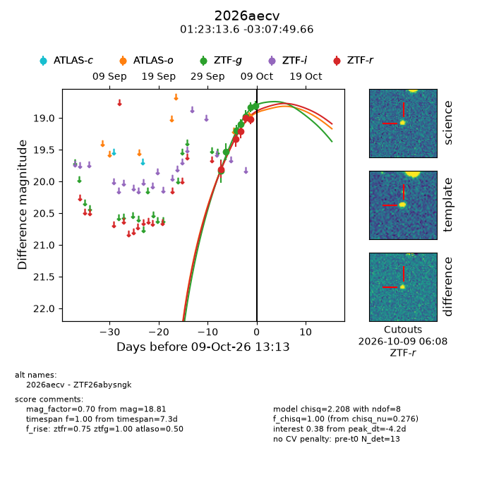
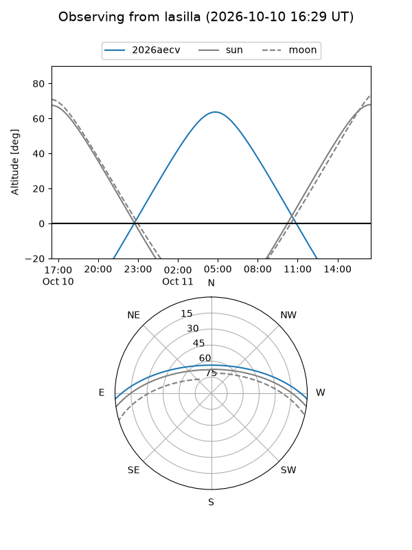
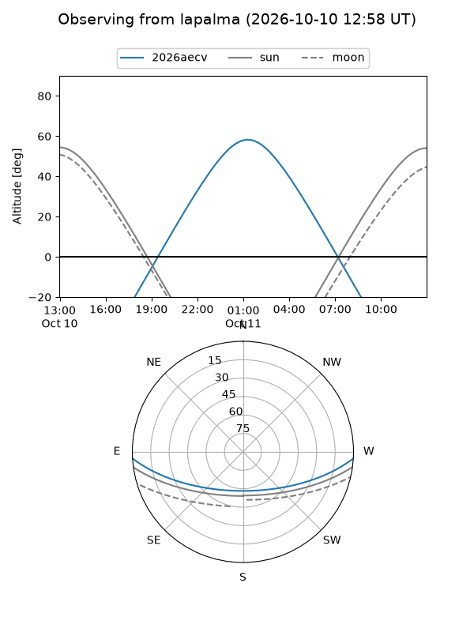
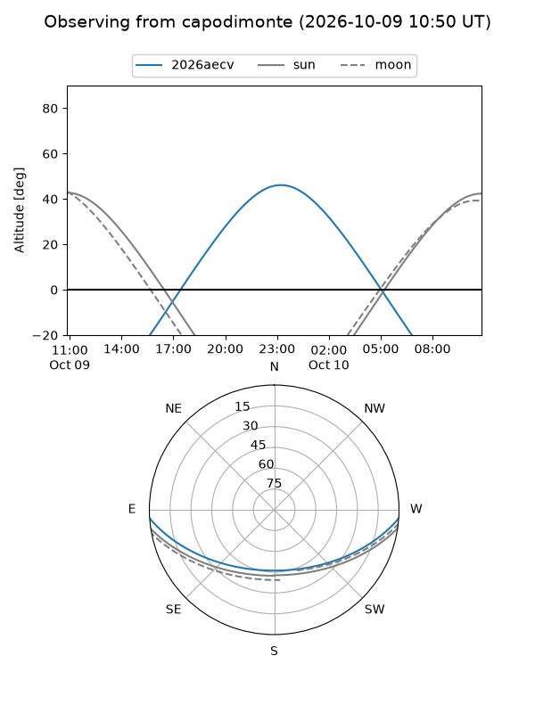
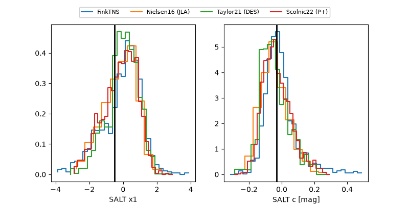

2026aecv
Target 2026aecv at 2026-10-09 13:16
Aliases and brokers:
FINK-ZTF: ztf.fink-portal.org/ZTF26abysngk
Lasair-ZTF: lasair-ztf.lsst.ac.uk/objects/ZTF26abysngk
ALeRCE-ZTF: alerce.online/object/ZTF26abysngk
YSE-PZ: ziggy.ucolick.org/yse/transient_detail/2026aecv
TNS name: wis-tns.org/object/2026aecv
Direct TNS query: direct search
alt names
ZTF26abysngk (ztf,fink_ztf)
2026aecv (tns,yse)
Coordinates:
equatorial (ra, dec) = 20.8066,-3.13046
equatorial (HMS+DMS) = 01:23:13.59,-03:07:49.66
galactic (l, b) = (141.8709,-64.82684)
Flags:
peak dt: -4.2
Photometry:
last atlaso=18.97, ztfg=18.81, ztfr=19.02
1 atlaso, 7 ztfg, 5 ztfr detections
Lightcurve

Visibility



Additional plots
